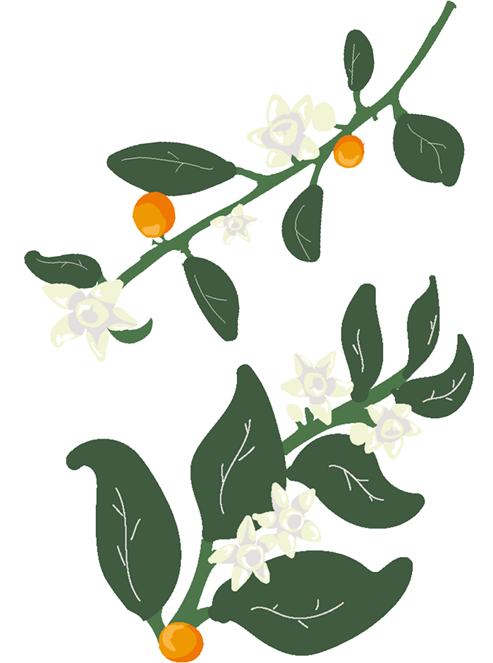
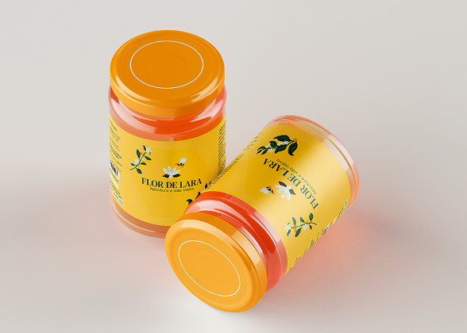
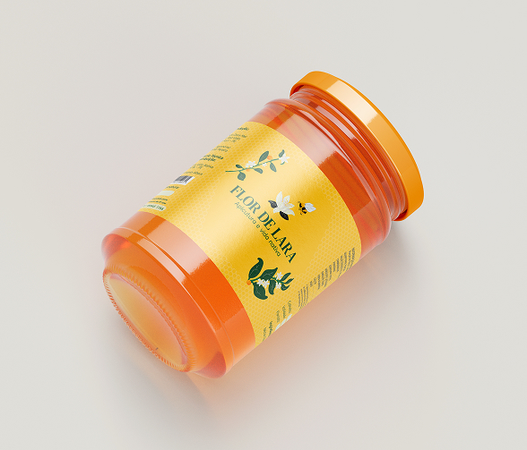
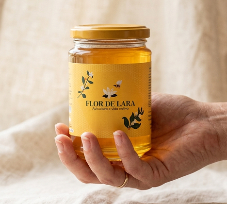
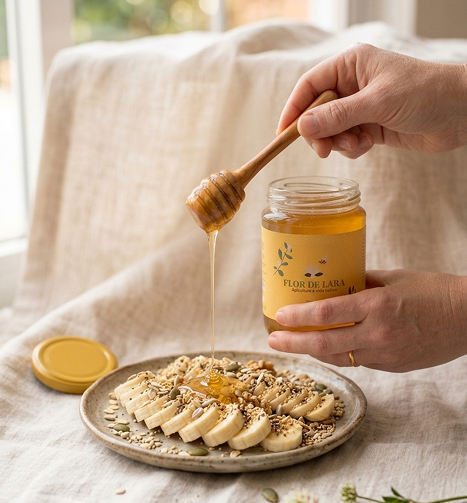

Sobre o Projeto
A Flor de Lara é uma marca natural e artesanal de produtos apícolas, como mel, própolis e pólen. Com foco no cuidado e na valorização do processo artesanal, busca oferecer produtos de qualidade, aproximando o consumidor da origem do alimento e da natureza.
Paleta de cores:
A paleta de cores remete ao mel e à natureza, com tons quentes que transmitem doçura e acolhimento, e o verde que reforça a origem natural e artesanal da marca.
Ilustração:
A ilustração é inspirada no universo apícola e na natureza, reforçando a origem natural dos produtos.
Abelha
Representa a apicultura e o processo de produção do mel.
Flor de laranjeira
Remete à florada e à procedência do néctar.

Galhos do pé de laranjeira
Complementam a composição, reforçando o cultivo e a conexão com o ambiente.
Tipografia:
DM Serif Text
primária
Dongle
secundária
A tipografia combina uma fonte principal mais estruturada com uma secundária simples, equilibrando clareza e naturalidade, em harmonia com a proposta artesanal e natural da marca.
Aplicações



